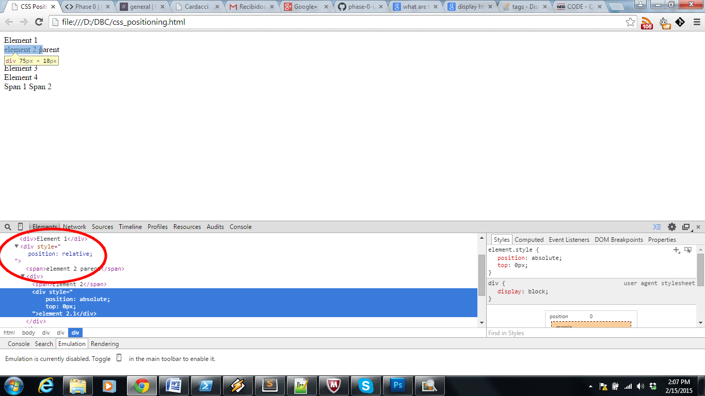

What are the differences between relative, absolute, and fixed positioning
2 - 15 - 2015
When adding elements to a HTML document, you'll notice that every element shows up on the browser in the same order that they are in the document, one below the other. Except for 'a' and 'span' tags, since their default display property are set to inline. Others tags default display property is block.
In other to position the elements according to a layout that you have predefined you need to use the css property position.
In the following image we try to move down the div element 1 by 10px, for that we set a top property indicating that it should have a 10px space on top of it, pushing down the div.
If you want an element to move down, left, rigth or up from its original position, then you have to declare its position as relative and use top, left, right or bottom properties to move it.
Notice that the body height didn't change still is 90px. But the div element 1 was push down 10px within his container.
This will happens to elements with position absolute and fixed as well, but the difference is that absolute position is within its parent that has position set to relative, so if you use a div inside another div and mark it as absolute your coordinates to move are going to start 0,0 where its div parent is displaying. If none of its parent is set to relative it will position using the body tag as it parent.
In the next image we set position to absolute but its parent has default position (static) so when we set top for element 2.1 it look up to it first parent with position set to relative, and didn't find it, so it use the body tag as reference, so basically the whole screen.
Now if we set element 2 parent position to relative, element 2.1 will use it as reference, and its coordinate will begin where this div (parent position set to relative) is.

But if you set position to be fixed then no matter where your div is, its parent will be the browser display screen, which means the element wont move not even when scrolling the page.
Hope this post helped you understand a little be more the differences between relative,absolute and static position.